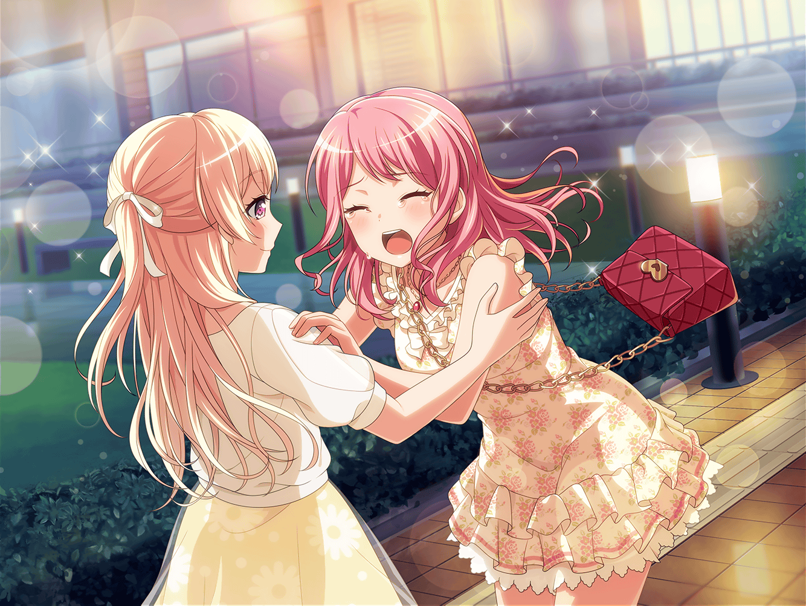

レッスンスタジオ
彩
それじゃ、もう１回撮ろう。
次ははい、チーズでいくよ？
スタッフ
みなさん、お疲れ様です
彩
あ……
お疲れ様です！
スタッフ
千聖さん、そろそろ次のお時間です
イヴ
……
千聖
次のお仕事まであと２時間近くありますよね？
移動を考えても、あと１時間は練習できるはずです
スタッフ
いえ、それでは時間めいっぱいになってしまいますので、
千聖さんが休憩できる時間がありません
千聖
……まだ、大丈夫ですから
スタッフ
……ですが、あまり無理をされては今後に支障が……
外で待っていますので、準備ができましたら出発しましょう
千聖
今後？ 今、やりきらなかったら今後のことなんか
気にしたって……！
彩
あ、あの……
千聖
……
千聖
映画もライブも、どちらも全力でやりきりたいんです。
……やりきって、パスパレを続けたい
イヴ
……！
千聖
こうして大きな映画のお仕事をいただけたのも、
パスパレでの経験があったからです。パスパレのみんなが
いなかったら、私は……
スタッフ
お話は移動中にうかがいますので。
行きましょう、千聖さん
千聖
……
千聖
……行きません
彩
千聖ちゃん……！
千聖
私……パスパレが好きです
彩
……っ！
千聖
この仕事は、好きって気持ちだけで
続けられるものじゃないってわかってます。
でも……私はこのバンドが好きです！！
千聖
これから先、どれだけ大変な道になったとしても……
私はこれからもパスパレを続けたい。
バンドが、メンバーのことが好きだから……続けたい……っ！
千聖
お願いします！
彩・日菜・イヴ・麻弥
……
千聖
撮影にも絶対に影響は出しません。
……今までもそれでやってきていたつもりです。
もちろん、これから先のお仕事にも……お願いします！
スタッフ
……わかりました。ただ、すぐに決められることではありません。
合同ライブの出来や、みなさん個人のお仕事の出来などを見て
最終的な判断をします
一同
……！
スタッフ
１時間後にもう一度お迎えに伺います
日菜
……行っちゃった
千聖
……ふう……
彩
〜〜〜〜〜っ！！
麻弥
あ、彩さん！？
彩
ご、ごめん！ けど、千聖ちゃんがパスパレのこと
好きって言ってくれたのが嬉しくって……うええっ……
千聖
そんなに泣かないで。ここまできたら、ライブ、失敗できないわ。
今以上にがんばらないと
日菜
……ふふっ！ 千聖ちゃん、おもしろい♪
千聖
そう？ 日菜ちゃんに興味を持ってもらえてよかったわ
千聖
（……まだ、手が震えてる。前に進むことって、
こんなに怖いことなのね）
千聖
（スタッフに歌いたいって直談判した彩ちゃん、
続けたいって説得しつづけたイヴちゃん。
二人共……なんて、強いのかしら）
千聖
（私も、強くならなくちゃ。自分のために。
――パスパレのために）

帰り道
駅前
日菜
じゃあ、みんなおつかれー！
またねー
麻弥・イヴ
お疲れさまですっ！！
彩
おつかれさまっ！
千聖
……彩ちゃん
彩
どうしたの？
千聖
夢を与えるアイドル……あゆみさんを目指して、
そうなりたいって言っていたわよね
彩
う、うん！ 今はまだ遠いかもしれないけど……
千聖
案外、もう近くまで来ているかもしれないわよ
彩
えっ！？ そ、そんなこと……
千聖
あなたは、私に夢をくれたもの
千聖
――ありがとう、彩ちゃん

彩
……っ！ うっ……うええっ……
ち、ちさとちゃ〜〜〜〜ん！！
千聖
（あなたが夢を見て、私が道筋を作る……
そんな風に、パスパレを前に進めていくのもいいかもしれない）
千聖
彩ちゃん、これからも一緒にがんばりましょう